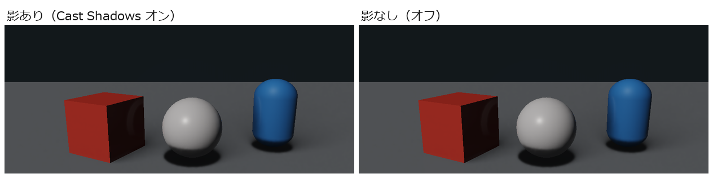
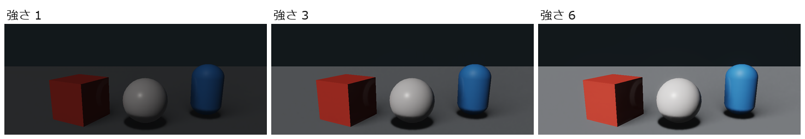
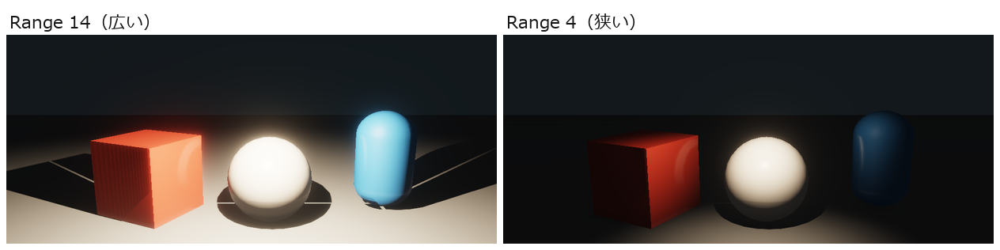
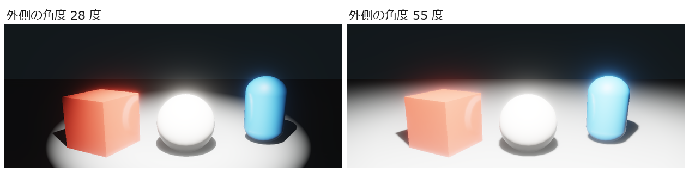

ライト（Directional / Point / Spot / Rect Light）
シーンを照らす光のコンポーネントです。4 種類あり、照らし方が違います。ライトが 1 つも無いシーンでは、物がほとんど暗く見えます。
| 種類 | 照らし方 | 使う Transform | 影の既定 |
|---|---|---|---|
| Directional Light | 太陽のように、シーン全体を同じ向きから照らします | 回転（向き）だけ | オン |
| Point Light | 電球のように、1 点から全方向を照らします。離れるほど暗くなります | 位置 | オフ |
| Spot Light | 懐中電灯のように、円錐の形に照らします | 位置と回転 | オフ |
| Rect Light | 蛍光灯のパネルや窓のように、長方形の面から前方を照らします | 位置と回転 | オフ |
どれも コンポーネントを追加 > Lighting にあります。
こんなときに使う
- シーン全体が暗いので、太陽の光で明るくしたいとき（Directional Light）
- 電球やたいまつのように、まわりだけを照らしたいとき（Point Light）
- 懐中電灯やスポットライトのように、一方向を照らしたいとき（Spot Light）
- 天井の照明パネル、窓から差す光、モニターの光のように、面から柔らかく照らしたいとき（Rect Light）
- 物の影を地面に落としたいとき
Directional Light のプロパティ
| 表示名 | 内部名 | 種類 | 既定値 | 範囲 | 説明 |
|---|---|---|---|---|---|
| 色 | color | 色 | 白 | 光の色。照らされた物がこの色を帯びます。白なら物の色のまま照らします。 | |
| 強さ | intensity | 小数 | 3 | 0〜100 | 明るさ。0 で消え、値に比例して明るくなります（2 倍にすると照らされた所が 2 倍明るくなります）。 |
| 影を落とす | cast_shadows | オン・オフ | オン | この光で影を作るかどうか。オフにすると、物の足元の影が消えて床から浮いて見えます。 | |
| 影の濃さ | shadow_strength | 小数 | 1 | 0〜1 | 影の暗さ。1 で光が完全にさえぎられた暗い影、0.5 で半分の濃さ、0 で影が見えなくなります。 |
| 深度バイアス (m) | shadow_depth_bias | 小数 | 0.02 | 0〜0.5 | 影の縞模様（影のちらつき）を抑えるためのずらし量 |
| 法線バイアス | shadow_normal_bias | 小数 | 1.4 | 0〜6 | 面の向きに沿って影をずらす量。縞模様が出るときに上げます |
| 影の最遠距離 | shadow_distance | 小数 | 120 | 1〜2000 | カメラからこの距離までの物だけ影を描きます。広げると遠くの物にも影が出ますが、同じ影の解像度を広い範囲に使うので、近くの影が粗くなりやすくなります。 |
| Volumetric 強度 | volumetric_intensity | 小数 | 0 | 0〜16 | 光が空気中の霧・もやに当たって見える「光の筋」の強さ。0 なら出ません（既定）。Local Fog Volume などの霧と組み合わせると、光の筋が見えます |
Directional Light は 1 つだけ使われます有効な Directional Light がシーンに 2 つ以上あっても、ゲームで使われるのはシーンの中で先にある 1 つだけです。2 つ以上あると、インスペクターに「Directional Light が N 個有効です。Runtime は先頭の 1 個だけを使用します。」と橙で表示されます。
Point Light のプロパティ
| 表示名 | 内部名 | 種類 | 既定値 | 範囲 | 説明 |
|---|---|---|---|---|---|
| 色 | color | 色 | 淡い橙（1, 0.9, 0.75） | 光の色。照らされた物がこの色を帯びます。白なら物の色のまま照らします。 | |
| 強さ | intensity | 小数 | 2 | 0〜100 | 明るさ。0 で消え、値に比例して明るくなります（2 倍にすると照らされた所が 2 倍明るくなります）。 |
| 範囲 | range | 小数 | 10 | 0.01〜10000 | 光が届く距離。端へ向かうほど暗くなり、外側は照らされません。広げると遠くまで照らし、明るさがゆるやかに減ります。 |
| 影を落とす | cast_shadows | オン・オフ | オフ | 影を作るかどうか。全方向の影を描くため処理が重く、既定はオフです | |
| 影の濃さ | shadow_strength | 小数 | 1 | 0〜1 | 影の暗さ。1 で光が完全にさえぎられた暗い影、0.5 で半分の濃さ、0 で影が見えなくなります。 |
| 深度バイアス (m) | shadow_depth_bias | 小数 | 0.02 | 0〜0.5 | 影のちらつきを抑えるずらし量。影の計算では 0.05 より大きい値は 0.05 として扱うので、0.05 を超えても効き方は変わりません |
| 法線バイアス | shadow_normal_bias | 小数 | 1.5 | 0〜6 | 面の向きに沿って影をずらす量 |
| 影のニア | shadow_near_plane | 小数 | 0.15 | 0.01〜10 | ライトからこれより近い物は影を作りません |
| 影の光源半径 (m) | shadow_source_radius | 小数 | 0.25 | 0〜10 | 光を出す球の大きさ。大きいほど影のふちがぼけて柔らかくなります（半影）。0 で以前と同じ硬い影 |
| Volumetric 強度 | volumetric_intensity | 小数 | 0 | 0〜16 | 光が空気中の霧・もやに当たって見える「光の筋」の強さ。0 なら出ません（既定）。Local Fog Volume などの霧と組み合わせると、光の筋が見えます |
Spot Light のプロパティ
| 表示名 | 内部名 | 種類 | 既定値 | 範囲 | 説明 |
|---|---|---|---|---|---|
| 色 | color | 色 | 淡い黄（1, 0.95, 0.85） | 光の色。照らされた物がこの色を帯びます。白なら物の色のまま照らします。 | |
| 強さ | intensity | 小数 | 2 | 0〜100 | 明るさ。0 で消え、値に比例して明るくなります（2 倍にすると照らされた所が 2 倍明るくなります）。 |
| 範囲 | range | 小数 | 12 | 0.01〜10000 | 光が届く距離。端へ向かうほど暗くなり、外側は照らされません。広げると遠くまで照らし、明るさがゆるやかに減ります。 |
| 内側角度 | inner_angle_degrees | 小数 | 25 | 0.1〜179 | しっかり明るく照らす円錐の角度 |
| 外側角度 | outer_angle_degrees | 小数 | 40 | 0.1〜179 | 光が届く円錐の角度。内側から外側にかけて少しずつ暗くなります |
| 影を落とす | cast_shadows | オン・オフ | オフ | オンにすると、照らされた物の後ろに影ができます。影の枠（最大 4 枚）が足りないときは、影なしで光ります。 | |
| 影の濃さ | shadow_strength | 小数 | 1 | 0〜1 | 影の暗さ。1 で光が完全にさえぎられた暗い影、0.5 で半分の濃さ、0 で影が見えなくなります。 |
| 深度バイアス (m) | shadow_depth_bias | 小数 | 0.02 | 0〜0.5 | 影のちらつきを抑えるずらし量。影の計算では 0.05 より大きい値は 0.05 として扱うので、0.05 を超えても効き方は変わりません |
| 法線バイアス | shadow_normal_bias | 小数 | 1.5 | 0〜6 | 面の向きに沿って影をずらす量 |
| 影のニア | shadow_near_plane | 小数 | 0.15 | 0.01〜10 | ライトからこれより近い物は影を作りません |
| 影の光源半径 (m) | shadow_source_radius | 小数 | 0.25 | 0〜10 | 光を出す球の大きさ。大きいほど影のふちがぼけて柔らかくなります（半影）。0 で以前と同じ硬い影 |
| Volumetric 強度 | volumetric_intensity | 小数 | 0 | 0〜16 | 光が空気中の霧・もやに当たって見える「光の筋」の強さ。0 なら出ません（既定）。Local Fog Volume などの霧と組み合わせると、光の筋が見えます |
Rect Light のプロパティ
Transform の前方（ローカルの +Z）へ、幅 × 高さ の長方形の面から照らします。面の裏側は照らしません。面の光なので、同じ明るさの Spot Light より影のふちが柔らかくなります（短い辺の半分を光源の半径として扱います）。
| 表示名 | 内部名 | 種類 | 既定値 | 範囲 | 説明 |
|---|---|---|---|---|---|
| 色 | color | 色 | 淡い黄（1, 0.95, 0.85） | 光の色。照らされた物がこの色を帯びます。白なら物の色のまま照らします。 | |
| 強さ | intensity | 小数 | 2 | 0〜100 | 明るさ。0 で消え、値に比例して明るくなります（2 倍にすると照らされた所が 2 倍明るくなります）。 |
| 範囲 | range | 小数 | 10 | 0.01〜10000 | 光が届く距離。端へ向かうほど暗くなり、外側は照らされません。広げると遠くまで照らし、明るさがゆるやかに減ります。 |
| 幅・高さ | width、height | 小数 | 1、0.5 | 0.01〜100 | 光る面の大きさ（m）。大きいほど広い面から照らすので、光が回り込んで柔らかくなり、影のふちもぼけます。 |
| Volumetric 強度 | volumetric_intensity | 小数 | 0 | 0〜100 | 霧・もやに当たって見える光の筋の強さ。0 なら出ません |
| 影を落とす | cast_shadows | オン・オフ | オフ | Spot Light と同じ影の枠（最大 4 枚）を使います。枠が足りないと影なしで光ります | |
| 影の濃さ | shadow_strength | 小数 | 1 | 0〜1 | 影の暗さ。1 で光が完全にさえぎられた暗い影、0.5 で半分の濃さ、0 で影が見えなくなります。 |
| 深度バイアス (m)・法線バイアス | shadow_depth_bias、shadow_normal_bias | 小数 | 0.02、1.5 | 0〜0.5、0〜6 | 影のちらつきを抑えるずらし量 |
| 影のニア | shadow_near_plane | 小数 | 0.1 | 0.01〜10 | ライトからこれより近い物は影を作りません |
Rect Light の光は、局所光の間接反射（プローブ GI） にも入ります。
ライトの数の上限ゲームの描画に使われるのは、Point Light が 8 個、Spot Light が 4 個までです。シーンの中で先に見つかったものから使われ、あふれたライトは光りません（Validation に「GPUへ送れるPoint/Spot Light数を超えています。」と出ます）。影を落とすライトはさらに枠が決まっていて、枠が足りないライトは影なしで光ります。
見た目の違い
同じシーン（赤い立方体・白い球・青いカプセル）で、設定だけを変えて並べました。




使い方
シーンを明るくする
- + 作成 > 空の GameObject で GameObject を作り、名前を「Sun」などにします。
- コンポーネントを追加 > Lighting > Directional Light を付けます。
- Transform の 回転 (度) で光の向きを決めます。たとえば X を 45 にすると、斜め上から照らします。
File > New Default Scene で作ったシーンには、最初から「Sun」という Directional Light が入っています。
ライトの届く範囲を見る
シーンビュー上部の ライト範囲 にチェックを付けると、ライトの届く範囲が表示されます（シーンビュー）。
影が見えないときは
- ライトの 影を落とす がオンか確かめます（Point・Spot・Rect Light は既定でオフです）。
- 足元の小さな接地影が足りないときは、コンタクトシャドウ（Directional Light の影を補う）を使います。
- 影を受ける側・落とす側のモデルの設定（Mesh Renderer などの影の設定）も確かめます。
- ライトの 強さ が弱いと、影ができていても周りとの差が小さく見えにくくなります。